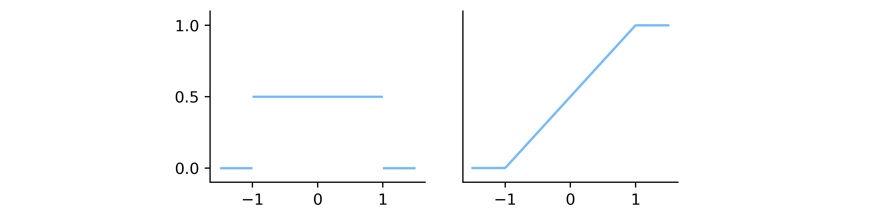

14.3. Il modello uniforme continuo#
Dati \(a, b \in \mathbb R\), con \(a < b\), definiamo \(Y = a + X (b-a)\), dove \(X\) è la variabile aleatoria introdotta nel Paragrafo 14.1. Si verifica facilmente che \(Y\) è una variabile aleatoria avente come supporto \(D_Y = [a, b]\), dunque una variabile aleatoria continua. Se si considera poi un generico \(y \in (a, b)\), si ha
mentre \(\forall y < a \; \mathbb P(Y \leq y) = 0\) e \(\forall y > b \; \mathbb P(Y \leq y) = 1\), e dunque riunendo i vari casi si ottiene
Analogamente, per \(y \in (a, b)\)
D'altra parte, quando \(y < a\) o \(y > b\) ci si trova al di fuori del dominio della variabile aleatoria, pertanto \(f_Y(y) = 0\). Riassumendo, la densità di \(Y\) è tale che
Per ogni \(a < b\) abbiamo quindi definito una variabile aleatoria continua la cui densità è costante nel corrispondente intervallo \([a, b]\). Coerentemente con il Sezione 14.1, ci riferiremo a essa come alla distribuzione uniforme continua sull'intervallo \([a, b]\).
Definition 14.5 (La distribuzione uniforme continua)
Dati \(a, b \in \mathbb R\) con \(a < b\), la distribuzione uniforme continua su \([a, b]\) è definita dalla densità
o in modo equivalente dalla ripartizione
Indicheremo il fatto che una variabile aleatoria \(X\) segue una distribuzione uniforme continua sull'intervallo \([a, b]\) utilizzando la notazione \(X \sim \mathrm U([a, b])\), con ovvie estensioni per il caso di intervalli non chiusi. Per brevità, diremo a volte che \(X\) è una variabile aleatoria uniforme continua su \([a, b]\).
La Figura 14.4 mostra il grafico delle funzioni di densità e di ripartizione per la distribuzione uniforme continua su \([-1, 1]\).
Show code cell content
import matplotlib.pyplot as plt
import numpy as np
from myst_nb import glue
def uniform_pdf(a, b, x):
return np.where((a <= x) & (x <= b), 1 / (b - a), 0)
def uniform_cdf(a, b, x):
return np.where((a <= x) & (x <= b), (x - a) / (b - a),
np.where(x < a, 0, 1))
plt.style.use('sds.mplstyle')
fig, axes = plt.subplots(1, 4,
gridspec_kw={'width_ratios': [.15, .2, .2, .15]},
figsize=(10, 2))
x = np.linspace(-1.5, 1.5, 150)
y_pdf = uniform_pdf(-1, 1, x)
y_cdf = uniform_cdf(-1, 1, x)
axes[1].hlines([0, 0.5, 0], [-1.5, -1, 1], [-1, 1, 1.5])
axes[2].plot(x, y_cdf)
axes[1].set_yticks([0, 0.5, 1])
axes[2].set_yticks([])
for a in axes[1:3]:
a.set_ylim(-0.1, 1.1)
axes[0].axis('off')
axes[3].axis('off')
glue("uniform-continuous", fig, display=True)

Fig. 14.4 I grafici della funzione di densità (a sinistra) e della funzione di ripartizione (a destra) della distribuzione uniforme continua sull'intervallo \([-1, 1]\).#
Va notato come la distribuzione derivata nel Paragrafo 14.1 rappresenti la distribuzione uniforme continua per il caso \(a=0\) e \(b=1\), e come in generale il procedimento seguito per ottenere la distribuzione uniforme continua non porta a un risultato diverso nel caso in cui il supporto da cui si parte sia un intervallo aperto o semiaperto. Per brevità, uniamo quindi tutte le distribuzioni uniformi continue su un intervallo nella famiglia definita di seguito.
Definition 14.6 (La famiglia uniforme continua)
La famiglia uniforme continua comprende tutte le definizioni uniformi continue definite su un intervallo in \(\mathbb R\), indipdententemente dalla particolare forma di questo intervallo.
14.3.1. Media e varianza#
Media, varianza e deviazione standard di una generica distribuzione uniforme continua si ottengono facilmente a partire dalle definizioni corrispondenti.
Lemma 14.2
Dati \(a, b \in \mathbb R\) con \(a < b\), sia \(X \sim \mathrm U([a, b])\). Si ha
Proof. Il valore atteso si calcola sfruttando il prodotto notevole legato alla differenza di quadrati:
Analogamente, la formula relativa alla differenza di cubi permette di calcolare \(\mathbb E(X^2)\):
così che \(\mathrm{Var}(X) = \frac{b^2 + a b + a^2}{3} - \frac{b^2 - 2 a b + a^2}{4} = \frac{b^2 - a^2}{12}\).
Si può notare che considerando \(X \sim \mathrm U([0, 1])\) e \(Y \coloneqq a + (b - a) X \sim \mathrm U([a, b])\), come indicato all'inizio di questo paragrafo, le proprietà di valore atteso e varianza permettono di ottenere in modo alternativo gli stessi risultati partendo da quanto ottenuto nel Paragrafo 14.1 per la distribuzione uniforme continua in \([0, 1]\): precisamente, \(\mathbb E(Y) = a + (b - a) \mathbb E(X) = a + \frac{b - a}{2} = \frac{a + b}{2}\) e \(\mathrm{Var}(Y) = (b - a)^2 \mathrm{Var}(X) = \frac{(b - a)^2)}{12}\). Inoltre sostituendo \(a=0\) e \(b=1\) in (14.10) si ottengono la media e la varianza della distribuzione uniforme continua in \([0, 1]\).
14.3.2. Momenti della distribuzione uniforme continua (*)#
La funzione generatrice dei momenti per la distribuzione uniforme continua si calcola facilmente, vista la semplice forma analitica della relativa funzione di densità di probabilità. Infatti, data \(X \sim \mathrm U([a, b])\), se \(t \neq 0\)
e \(m_X(0) = \mathbb E ( 1 ) = 1\) altrimenti.
La derivata prima di questa funzione generatrice dei momenti è
anche in questo caso, per \(t = 0\) la funzione non risulta definita, ma è possibile calcolare il suo limite per \(t \to 0\), ottenendo
che coincide, come deve essere, con il valore atteso della distribuzione. A partire dalla funzione generatrice dei momenti è possibile calcolare i momenti centrali, ma il procedimento risulta più complesso rispetto al diretto utilizzo della relativa definizione. Per alleggerire la notazione, poniamo \(\mu = \mathbb E(X) = \frac{a + b}{2}\), così che il momento centrale \(n\)-esimo è uguale a
Tenuto conto del fatto che \(a - \mu = \frac{a - b}{2}\) e analogamente \(b - \mu = \frac{b - a}{2}\), si ha dunque
Pertanto, quando \(n\) è dispari si annulla sempre il numeratore della frazione, e dunque \(\mu_n = 0\), mentre per \(n\) pari si ha
Da questo risultato si ottiene che, per una generica distribuzione uniforme continua tra \(a\) e \(b\)
la varianza è uguale a \(\mu_2 = \frac{(b - a)^2}{3 \cdot 4}\), come già abbiamo ricavato;
annullandosi il terzo momento centrale, la skewness vale zero, cosa peraltro facilmente evincibile osservando che la densità di probabilità è simmetrica rispetto al valore atteso;
la curtosi è uguale a
\[\frac{\mu_4}{\sigma^4} - 3 = \frac{(b - a)^4}{5 \cdot 16} \frac{144}{(b - a)^4} - 3 = \frac{9}{5} - 3 = - \frac{6}{5} \enspace,\]il che significa che questa distribuzione è platicurtica, nel senso che è più piatta rispetto a una distribuzione normale che ha lo stesso valore atteso e la stessa varianza, come illustrato nella Figura 14.5.
Show code cell content
from scipy import stats as st
plt.style.use('sds.mplstyle')
a = -3
b = 3
fig, (ax_l, ax, ax_r) = plt.subplots(1, 3,
gridspec_kw={'width_ratios': [.15, .2, .15]},
figsize=(10, 2))
ax_l.axis('off')
ax_r.axis('off')
x = np.linspace(-10, 10, 200)
Z = st.norm((a+b)/2, (b-a)/(12)**0.5)
y_norm = Z.pdf(x)
ax.plot(x, y_norm)
ax.plot([-10, a], [0, 0], c='k')
ax.plot([a, b], [1/(b-a), 1/(b-a)], c='k')
ax.plot([b, 10], [0, 0], c='k')
ax.set_ylim(0, 0.3)
fig.show()
glue("uniform-kurtosis", fig, display=True)
Fig. 14.5 Grafici delle funzioni di densità di probabilità di due distribuzioni, rispettivamente uniforme continua tra -3 e 3 (spezzata nera) e normale avente lo stesso valore atteso e la stessa varianza di quella uniforme (curva blu). Il secondo grafico evidenzia un picco più alto rispetto al primo, essendo l'uniforme continua una distribuzione platicurtica.#
14.3.3. Quantili della distribuzione uniforme continua (*)#
Tenuto conto del fatto che la densità di una distribuzione uniforme continua è costante su un intervallo \(I = [a, b]\) e nulla altrove, intuitivamente il relativo quantile di livello \(q \in [0, 1]\) sarà il punto di \(I\) caratterizzato dalle seguenti proprietà:
la sua distanza da \(a\) cresce linearmente rispetto a \(q\),
la sua distanza da \(b\) cresce linearmente rispetto a \(1-q\).
Più formalmente, \(x_q\) sarà uguale alla combinazione lineare convessa di \(a\) e \(b\) che ha \(q\) come coefficiente:
come dimostrato qui di seguito.
Lemma 14.3
Dati \(a, b \in \mathbb R\) con \(a < b\), una variabile aleatoria \(X \sim \mathrm U([a, b])\) e \(q \in [0, 1]\), il quantile di livello \(q\) di \(X\) è \(x_q = a + q (b - a)\).
Proof. La tesi è banale quando \(q=0\) perché in questo caso il quantile è la più piccola specificazione di \(X\) e dunque \(x_0 = a = a + 0 (b - a)\). Un ragionamento analogo vale nel caso \(q =1 \). Concentriamoci dunque sul caso \(q \in (0, 1)\) e consideraimo l'equazione \(F_X(x_q) = q\), che definisce il quantile cercato e che equivale a
La sua soluzione è \(x_q = a + q (b - a)\).
Da questo lemma si ricava immediatamente che, per una distribuzione uniforme continua tra \(a\) e \(b\),
la mediana coincide con la media, cosa peraltro implicata dal fatto che la densità di probabilità è simmetrica rispetto al valore atteso;
il primo e il terzo quartile sono rispettivamente \(\frac{3a + b}{4}\) e \(\frac{a + 3b}{4}\);
il range interquartile vale \(\frac{a+b}{2}\).
La Figura 14.6 evidenzia che, come era pienamente ragionevole aspettarsi tenendo conto della forma della funzione di densità di probabilità, il diagramma a scatola per questa distribuzione, è perfettamente simmetrico.
Show code cell content
fig, axes = plt.subplots(1, 3, figsize=(6, 0.3))
for ax in axes:
ax.axis('off')
ax = axes[1]
a = -3
b = 5
first_quartile = (3*a + b) / 4
median = (a + b) / 2
third_quartile = (a + 3*b) / 4
lw = 1
height = 0.2
ax.plot([median, median], [-height, height], c='k', linewidth=1.5)
ax.plot([a, a], [-.1, .1], c='k', linewidth=lw)
ax.plot([a, first_quartile], [0, 0], c='k', linewidth=lw)
ax.plot([first_quartile, first_quartile], [-height, height],
c='k', linewidth=lw)
ax.plot([third_quartile, third_quartile], [-height, height],
c='k', linewidth=lw)
ax.plot([first_quartile, third_quartile], [height, height],
c='k', linewidth=lw)
ax.plot([first_quartile, third_quartile], [-height, -height],
c='k', linewidth=lw)
ax.plot([third_quartile, b], [0, 0], c='k', linewidth=lw)
ax.plot([b, b], [-.1, .1], c='k', linewidth=lw)
ax.text(a, -0.5, '$a$', ha='center')
ax.text(b, -0.5, '$b$', ha='center')
ax.text(median, -0.6, r'$\frac{a+b}{2}$', ha='center')
ax.text(first_quartile, 0.4, r'$\frac{3a + b}{4}$', ha='center')
ax.text(third_quartile, 0.4, r'$\frac{a + 3b}{4}$', ha='center')
fig.show()
glue("uniform-continuous-bp", fig)
Fig. 14.6 Diagramma a scatola per la distribuzione uniforme continua tra \(a\) e \(b\).#
14.3.4. Implementazione del modello uniforme continuo#
Per quanto rigaurda le distribuzioni discrete, scipy.stats mette
a disposizione delle funzioni con un'interfaccia naturale i cui parametri
sono direttamente legati ai parametri della distribuzione stessa. Anche nel
caso continuo, ogni distribuzione è associata a una funzione che restituisce
le istanze delle corrispondenti classi. Però, indipendentemente dalla
distribuzione che si vuole generare, queste funzioni si invocano specifcando
sempre i parametri loc e scale, legati rispettivamente alla centralità e
alla dispersione della distribuzione generata. La relazione precisa
tra i valori specificati per questi argomenti e il risultato ottenuto cambia
di caso in caso. Per quanto riguarda una generica distribuzione uniforme
continua \(\mathrm U([a, b])\), il valore di loc coincide con \(a\), mentre
quello di scale equivale a \(b - a\). La
Figura 14.7 mostra l'istogramma che si
ottiene a partire da un campione di valori pseudo-casuali generati da questa
implementazione, sovrapposto al grafico della corrisondente funzione di
densità di probabilità.
Show code cell content
fig, (ax_l, ax, ax_r) = plt.subplots(1, 3,
gridspec_kw={'width_ratios': [.15, .2, .15]},
figsize=(10, 2))
ax_l.axis('off')
ax_r.axis('off')
a = -4
b = 5
U = st.uniform(a, b-a)
m = 5000
x = U.rvs(m)
ax.hist(x, bins=10, density=True, color='lightgray', edgecolor='gray')
ax.plot([-10, a], [0, 0], c='C0', zorder=3)
ax.plot([a, b], [1/(b-a), 1/(b-a)], c='C0')
ax.plot([b, 10], [0, 0], c='C0', zorder=3)
ax.set_ylim(-.001, .2)
ax.set_xticks([-10, -7, -4, -1, 2, 5, 8])
ax.set_yticks([.05, .1, .15, .2])
fig.show()
glue("uniform-implementation", fig)
Fig. 14.7 Le barre mostrano l'istogramma ottenuto a partire da un insieme di valori pseudo-casuali generati a partire da una distribuzione uniforme tra \(-4\) e \(5\), mentre le spezzate corrispondono al grafico della funzione di densità di probabilità della medesima distribuzione.#